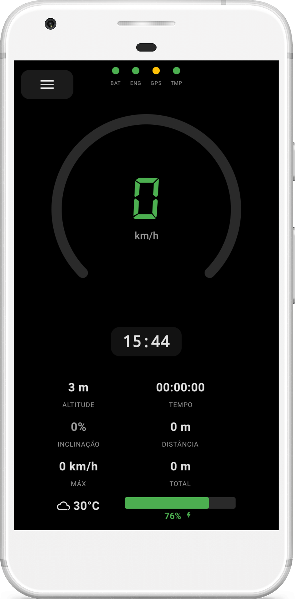
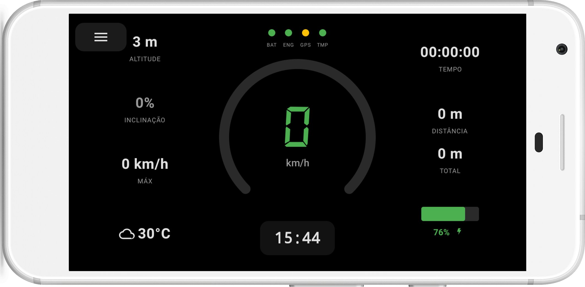
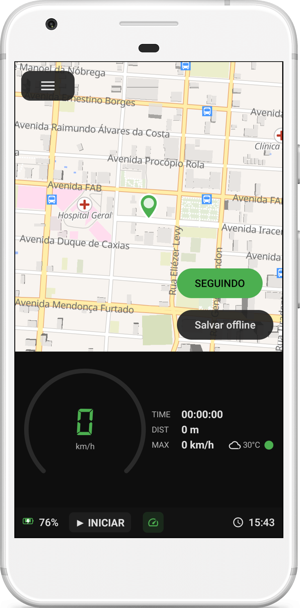

Open Source
BikeTrackd
Seu computador de bike completo,
offline e sem anúncios.

Tudo que você precisa,
nada que você não precise.
Velocímetro Digital
Arco animado com gradiente de velocidade, mostrador digital em estilo 7-segmentos, alertas visuais de bateria, GPS, temperatura e manutenção.
GPS & Mapas
Mapa interativo com MapLibre, trilha em tempo real, rotas A→B via GraphHopper, mapas offline para economizar dados.
Bikes & Peças
Cadastre múltiplas bicicletas, acompanhe desgaste de pneus, correntes e pastilhas com alertas visuais de manutenção.
Estatísticas
Gráficos semanais e mensais, recordes pessoais, streak tracking, exportação de sessões em GPX e backup completo em JSON.
Modo Offline
Funciona completamente sem internet. Mapas, tracking e histórico salvos no dispositivo. Sua privacidade em primeiro lugar.
Sem Anúncios
100% gratuito e open-source (MIT). Sem rastreamento, sem coleta de dados, sem surpresas. Apenas você e sua bike.
Velocímetro
projetado para performance.
- Arco animado Gradiente de verde a vermelho conforme a velocidade aumenta, com escala configurável até 120 km/h.
- Mostrador digital Fonte 7-segmentos para leitura rápida, com suporte a unidades métricas e imperiais.
- 5 alertas visuais BAT (bateria), ENG (movimento), GPS (sinal), TMP (temperatura), MR (manutenção) — cores e blinking indicators.
- Modo paisagem Layout otimizado para portrait e landscape, com mini velocímetro no modo dividido com o mapa.

Mapas offline,
liberdade total.

- MapLibre GL Mapas vetoriais gratuitos via OpenFreeMap, sem necessidade de API key.
- Download offline Baixe mapas de qualquer cidade em um raio de 40km para usar sem internet.
- Rotas A→B Toque e segure no mapa para definir destino. Roteamento com GraphHopper e auto-rerota.
- Split-screen Velocímetro e mapa lado a lado no modo paisagem para máxima informação.
Dados que importam,
gráficos que motivam.
Construído com a comunidade,
para a comunidade.
BikeTrackd é 100% gratuito e open-source. Sem anúncios, sem rastreamento, sem taxas. Você pode verificar o código, sugerir mudanças e contribuir com o projeto.